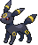
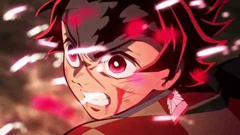

-
Alakazam #065

- psychic
Tem um nível incrivelmente alto de inteligência. Alguns dizem que Alakazam se lembra de tudo o que acontece com ele, desde o nascimento até a morte.
-
Farfetch'd #083

- Normal
O talo que este Pokémon carrega em suas asas serve como uma espada para cortar os oponentes. Em uma situação terrível, o talo também pode servir de alimento.
-
Pichu #172

- Eletric
É inábil em armazenar energia elétrica. Qualquer tipo de choque faz com que ele descarregue energia espontaneamente.
-
Charmander #004

- fogo
Tem preferência por coisas quentes. Quando chove, diz-se que o vapor jorra da ponta de sua cauda.
-
Umbreon #197
- Dark
Quando exposto à aura da lua, os anéis em seu corpo brilham levemente e ele ganha um poder misterioso.
-
Charizard #006

- fogo
- voo
Ele cospe fogo que é quente o suficiente para derreter pedras. Pode causar incêndios florestais soprando chamas.
-
Squirtle #007

- Agua
Quando retrai seu longo pescoço em sua concha, esguicha água com força vigorosa.
Garchomp #445

- Dragon
- Ground
Diz-se que quando alguém corre em alta velocidade, suas asas criam lâminas de vento que podem derrubar árvores próximas.
Blastoise #009

- Agua
Ele esmaga seu inimigo sob seu corpo pesado para causar desmaios. Em uma pitada, ele se retirará para dentro de sua casca.
Pikachu #025

- Eletric
Quando está com raiva, descarrega imediatamente a energia armazenada nas bolsas de suas bochechas.
Gengar #093

- psychic
- Gost
Para roubar a vida de seu alvo, ele se esconde na sombra da presa e silenciosamente espera por uma oportunidade.
lucario #448

- lutador
- ferro
Diz-se que nenhum inimigo pode permanecer invisível para Lucario, uma vez que pode detectar auras - mesmo aquelas de inimigos que de outra forma não poderia ver.
tanjiro- respiração do sol
Um ser com muito qi de batalha, quando estar com a respiração do sol.